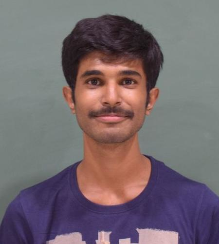

|  | Arka Ray |
Hi! I am Arka Ray. I did my masters from Computer Science and Automation department of the prestigious Indian Institute of Science (visit CSA@IISc for more) and my B. Tech from University of Calcutta. I have always taken an interest in the more theoretical side of computer science and have studied, as part of my coursework,
approximation algorithms,
LP/SDP/Sum of Square Hierarchies with Rameesh Paul
computational complexity theory,
Parity not in ACC^0[q] with Nabarun Deka
In addition, I was a TA for design and analysis of algorithms (winter 2020).
I currently work on approximation algorithms, and hardness of approximation. Arindam Khan and I worked on showing inapproximability results for various packing and covering problems as part of my MTech Project.
This Page is still under construction. Please visit later.
Until then go to Arka Ray @ CSA or find me on LinkedIn.